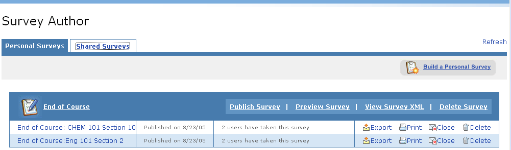

Click on the tab for the type of survey: personal or shared, then click the distribution title to view the results of a specific survey distribution.
In the results view, you may choose to view a summary of results or individual survey responses.

Closing a Survey Distribution
To close a survey distribution:
1.Click the Close icon (Envelope with red X) to the right of the survey distribution you wish to close.
2.The survey will no longer be available to recipients for response. The close survey icon will no longer appear for the distribution.
To print survey results:
1.Click the Print icon next to the survey distribution results you wish to print.
2.The results will open in a separate web browser.
3.Select Print from the File drop-down menu.
4.Click the Print button.
Before exporting survey results:
- Click the Export icon next to the survey distribution whose results you wish to export.
- Select the type of information you wish to export by selecting one of the options: Summary, Respondents, Details, or Details - Delimited.
- Click Export.
- Select a location on your computer where you would like to place the survey results.
- Once you are notified that the download is complete, you may navigate to the location you selected to view the results.
- Click Close in the Export Survey Results view to return the Survey Author channel.
To Delete a Survey
- Click the Delete Survey link associated to the survey you wish to delete. This will delete the survey, all distributions of the survey, and all survey results.
To Delete a Survey Distribution
1.Click the Delete icon to the right of the survey distribution whose results you wish to delete. This will delete the survey results and remove access to the survey from all recipients.